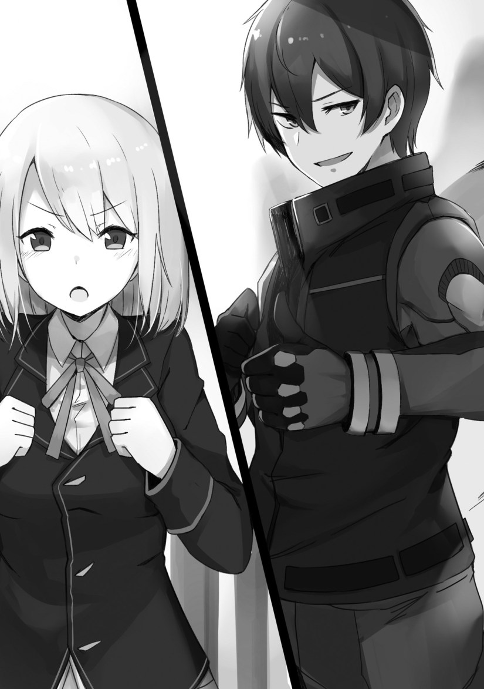

The place where I was called to was an unpopulated room.
It seemed that it was normally a place that boys could borrow to hold tea ceremonies.
“I said that I wanted to use this place to hold a discussion with you, so they gladly lent it to me. I’m on good terms with the teachers.”
Could it be that teacher’s, no, mentor’s doing? If it were that instructor, who was the embodiment of a gentleman, then he certainly would be this considerate towards her.
The pleasantry of it, makes me shed a tear.
“…Baltfault, you will withdraw from this duel.”
Anjelica had a slightly haggard face while telling me to drop out of the duel.
“Even if I back down now, I won’t be able to save face anymore.”
I don’t really care about honor. I was participating because I wanted to.
Anjelica made a feeble smile.
“You don’t want to do it anymore, right? They turned your room into a mess. It seems that they’re planning to thoroughly threaten you like this until the time of the duel.”
It appeared as if they were trying hard not to give her even the one in a million chance of winning.
It seemed that Julian and the others weren’t aware of this.
This was a move made by the followers surrounding the prince.
What wonderful loyalty!
However, I won’t forgive them for picking on me.
I’m a small guy. A mob, furthermore.
So, I’d like things to return to normal if possible.
I usually wait for turmoil to calm down, but I decided not to give in to the pressure this time.
“I have no power anymore. I can’t do anything you expect me to do.”
I sighed.
“Did your household say something to you?”
Anjelica strongly clutched her arms, as if hugging herself.
“…They said that it was imprudent of me to propose a duel. But, but…I had to do something. Anything. I wanted that woman to stay away from his Highness! My thoughts turned fuzzy because of that. When I wrote back to them saying that, they told me to be docile. It’s over for me. I’m being sent to a remote region under house arrest. In the worst case scenario──”
──It seemed that it was an internal decision. It appeared that she had to make up for her mistake with her livelihood.
I didn’t think that such a thing will happen, though.
“You’ve got it wrong. To be honest, I don’t really care about a duke household.”
Anjelica lifted her head and made a surprised expression.
“Th, then why did you come forward at that time? Are you an idiot? You’re definitely an idiot! Listen, it’ll be over for you whether you lose or win in the upcoming duel. To start with, your opponents are his Highness the crown prince and other prestigious nobles. What do you plan on doing in the future now that you’ve picked a fight with them?!”
In response to Anjelica, who kept talking until she was out of breath, I made small, meaningful smile.
“I don’t care. I have no need for noble status or honor. Do you know how people in the lower caste are treated in the advanced class? Each day, they’re working their hardest to be self-sufficient, trying to earn the favor of girls. I’m sick of it already. So in that case, I thought that I’d rather beat up all of the guys I hate.”
“You’re going to get your family involved in this trouble as well!”
“Though things may appear that way, I’m an independent knight. It’s just temporary, though. Well, it’s the kind of thing where I’m considered separate from my parents’ household.”
“T, temporary?”
I planned on being independent. When I said that it was temporarily, Anjelica made a awkward face. However, it seemed that my point got through.
Well, I was implying that it was to vent out my stress, but…just like Anjelica, I wasn’t fond of that Marie girl.
“So, you want Marie to stay away from his Highness. I want to beat all those guys up. You see, I think this calls for us to join forces.”
Anjelica hesitated while taking several steps back.
“Are you mad? They’re powerful people at the top of the year.”
That wasn’t a problem.
It may have been tough if this duel happened in the third──no, second year, but at this grade, anything could still happen.
“It’ll be fine. Though I may not look like it, I’m quite strong.”
“Are you even trustworthy?! C, come to think of it, I did hear that many of the adventurers who capture dungeons have a few screws loose in their head. Are you one of those types of people?!”
“How rude! I stepped in because I have a chance of winning. In the first place, you were the one that initiated the duel!”
“L, like I said, that was my mistake. I’m taking responsibility for it. You can stay at the academy. You don’t need to get involved…well, coming forward at that time was plenty enough.”
She might have thought that while everyone was seeing her as the enemy, I was coming to help her without considering gains or losses. Anjelica likely thinks on the inside that I was playing the hero.
For small mobs like me, a hero is something far out of reach.
“No, withdrawing after coming this far is kind of…embarrassing.”
“…Do you realize that your opponents include Greg and Chris? Those guys are seriously strong.”
It was as she said. Not just those two, but the other three also stood out as the strong ones within the grade.
Right, within the grade.
“In addition…just what are you planning to do by betting a large sum on yourself?”
Did I have reason for why I bet a large amount? I did.
I should also mention that I don’t like gambling.
“Would you like to place a bet, then? If you bet on me, you’ll make a profit.”
“I have no need! Does it look like I’m troubled with money?”
It’s things like this that make me remember she’s the daughter of high-class family…well, whatever.
“The harassment will also end soon. There’s only a few days left until the duel.”
I left the room while saying that.
◇
It was the day of the battle.
The area in the academy was very spacious.
The audience were protected by a magic barrier, ensuring perfect safety.
I was in the academy’s arena. When thinking about about how many students came here to duel…well, I didn’t really feel much.
While changing clothes in the waiting room, I looked at my figure.
[It matches you. Well, that’s a given considering that this is an article I prepared for you, master.]
I wore pants and a vest over the dark grey main suit that clung onto my body, which was of a color that matched with an aircraft.
There was a part that guarded the neck.
As expected, these clothes emphasize the outline of my body, which is something I’d rather overlook.
“It’s different from what I had thought. I demand you remake it.”
[I refuse. Even if the color and design aren’t what you expected, that doesn’t change its performance. It’s a bother if you demand me to change it because you don’t like it. Please bear with it.]
Does this thing really think of me as its master?
When I wore a jacket and exited the waiting room, it turned out that Olivia was waiting there.
“──Ah!”
Perhaps leaning on the wall while waiting, she got into a panic and then moved closer to me. I felt that the distance between us was exceedingly close.
“U, um──I can’t do anything, but I’ll cheer you on! I’ll be rooting for you, Leon!”

It was a strange feeling being cheered on by the protagonist.
Normally, she’d be on the side of Julian and the others.
“Did you place a bet on me? If so, you’ve made the right choice. You’re about to make a large profit.”
When I made a thumbs-up and was about to leave, Olivia denied involvement with the bet.
“Huh? I didn’t place a bet. I don’t think people should gamble.”
“O, oh.”
Being told that with her pretty, tranquil eyes, I started feeling ashamed about betting a large amount.
Could this be the power of the protagonist?
It was as if a halo was glowing behind Olivia, too dazzling for those of a crooked heart.
Once the two of us headed from the waiting room to the arena, the five opponents were already present there.
They were already wearing the armor they were proud of and made a display of it to the audience.
Rather than calling them armor, they were more like robots, and their sizes spanned almost three meters. They were items akin to a powered suit, wonderful weapons modelled after a human, and could fly in the air.
“Oh~, what flashy coloring.”
A row of armor with flashy ornaments attached were lined up, starting with the crown prince’s white one.
A unified booing erupted once I appeared.
When looking at the audiences’ seats, I could see the figures of both Daniel and Raymond. When I looked over at them, I could see their red tickets that they were hiding from the people around them, meaning that they had placed a bet on me.
Those who were betting on the prince and the others got a blue ticket.
“So they went through with it…well then, I’ll also do my best.”
Once I appeared, Anjelica came rushing over.
“Hey! Why did you come without preparing armor?! Don’t tell me with a confident face that you don’t have any!”
She wasn’t holding back on me.
I looked through the roof-less arena, into the sky.
The blue sky had spread out today.
“It’ll be fine…it’s arriving right now.”
I pointed with my finger towards a black speck in the sky. Luxon, who was hiding inside my jacket, called out in a voice that only I could hear.
[Arroganz is here.]
First! OMG~!
Tasuketteeeee
WOOOOOOO!!!!! So excited for the next section
Oh yeah, shouldn’t the suit be named “Arrogance” rather than “Arogantz,” right?
It’s german. Supposed to be Arroganz
Damn the cliff!!
damn cliff..
thanks for the chapter
YES!!! I cannot wait for the next chapter!
Marvelous Leon
Like like like..
HYPEE!!!!!!
Thank you~~~
i want to see marie face after see that black armour XD
Yeah, she will realizes that the black armor is actually an overpowered cheat item.
Lol then she will be like “hey isnt that the item my stupid brother bought before he died?!”
Everything I’m reading is the same as the web novel or I’m reading the light novel that I still do not know I only go in volume 3 anyway, according to where I go the sister does not distinguish the armor since she only played a small part and the saved of the brother since for her the part of the war was impossible so she knows nomas part of the text, from there nothing until the protagonist admires it for having come so far without knowing the context nor the history
Yes beat up those as*hole
What a cliff, thanks for the chapter
Can’t wait for the next one, （ ´∀｀）
damn it was getting interesting.
Go Leon!!! Beat the crap of those five idiots.
You mean Shoveling their butt ? (≖ ͜ʖ≖)
AROGANTZ READY FOR COMBAT!!!
Where is the rest of the chapter
Damn rhe cliffhanger. Liking this so far. Hyped
“I don’t care. I have no need for noble status or honor. Do you know how people in the lower caste are treated in the advanced class? Each day, they’re working their hardest to be self-sufficient, trying to earn the favor of girls. I’m sick of it already. So in that case, I thought that I’d rather beat up all of the guys I hate.”
Leon is right!!! It’s time for the mobs to beat the crap of those ikemen!
Thank you and I want to know how must money does Leon make from this dual?
ALOT Considering that EVERYONE ,aside from his 2 friends and Olivia, all placed their bets against him
Well most of it will be gone in an instant…
there are no idiot nobles who got into debt for betting more on the five people who are on the side of marie when they lose most nobles are left with a debt that can not pay thinking that the five hiban to emerge victorious
What an Arogantz mob.
Hype!!!
Olivia cheering for our MC, is Hella cute.
is the first to be confessed to the protagonist after she is saved from an almost certain death
Thanks for the chapter.
Yeah, it’s time for five scrubs to get rekt.
Since when that Secret Boss with cheat stat is a mob.
It’s actually cheat item but ok
Thanks for the chapter.
Come one Anjelica, be more unbelieving. When Leon win, you will fall more
Time for second heroine
in reality it is in gratitude with the protagonist and it becomes close with Olivia it begins to fall in love since the protagonist charges forward when she is a hostage of another kingdom
Olivia best girl!!!!
It is so pure that even the protagonist is afraid of his power of love in a war that is like a mind control but if it is the most innocent it is sometimes a disaster but it is very much loved
Damn the cliff!!
thanks for the chapter
I like the name, “Arogantz” the “Arrogance” personality suits him well
Crush all ikemen
i’m so hyped that i almost not see the cliff 0.o
I beg of you! Please increase the release rate as much as possible. I am too eccited for the next releases!!!!!
—————————————
Anyway, thanks for the chapter.
Pay to get it baby~
Is what I really want to say but they are fast enough already with a good quality translation~
It’s okay the next part will be the conclusiob of the chapter, so u’r not gonna wait for too long.
Noooooo, i hate cliffhanger
maybe if i click the refresh button fast enough i’ll find the next chapter?
LET’S GET READY TO RUMBLE!
Yeah Arogantz ! Shovel their butt hahahaha
holy shit this gonna be epic
TITANFALL
It’s black sazabi vs sinanju stein younger bro
Thx for the Chapter~!!
(´｡• ω •｡`)
Somehow I read that last bit as “Ero-Gantz”……..
CLIFFFFFFFHANGERRRRRRRRS!
MC: *eyes his 5 opponents….
“That’s not a Mecha….”
*P2Win machine lands…
“THIS is a MECHA”????????????
These chapters are darn short for my taste, so many cliffs man.
Thanks for the chapter. Wish could see Marie’s face when she realizes the mob Leon has already claimed the island and armor before her. Especially considering the future battles are almost unbeatable without items from spending money on microtransactions.
Thanks for the Chapter!!
Aaàaaaaaaaa
Dang it, can’t wait for the next chapter!
Leon persuading people to bet for him.
“Would you like to place a bet, then? If you bet on me, you’ll make a profit.”
“I have no need! Does it look like I’m troubled with money?”
Leon forgot that Anjelica is the duke’s daughter so she has no problem in money.
“Did you place a bet on me? If so, you’ve made the right choice. You’re about to make a large profit.”
“Huh? I didn’t place a bet. I don’t think people should gamble.”
Olivia being a good girl and not gambling. Leon feels ashamed.
Only Daniel and Raymond bet for him and will likely make a large profit.
And the people who bet for the five idiots will lose a large profit and others will be in debt.
Save me. I was left hanging on this cliff.
THANKS FOR THE CHAOTER!~
Leon = lion…… pride….. arogantz = arrogance?????…… Lion’s sin of pride…… Don’t tell me he’s Escanor!!!
How the hell can i sleep after this chap? WAAAAAAY TOOOO HYYYYYYYYPED
There seems to be no reason at all for Anjelica to be so severely punished for trying to duel with sone minor noble daughter stealing her fiancé the prince. The only reason is to make her a damsel in distress.
Maybe it’s a manner of pride.
This is a female dominated society, and by all rights it should be the males fighting in order to get with her, not the other way around. I’d imagine that if this happened with any other noble girl in her position, they’d just dump his ass and move on. Because they’re women, and in this world they are supposed to be leagues beyond men.
And yet here she is, desperately fighting a losing battle over a man who has proven to be somewhat “loose” in his affections for another woman. In the eyes of many, she’s acting like a desperate woman and not the duke’s daughter she is.
Very shameful. Very scandalous. I can see why her family would want to put her away from the public eye for a few years so as to save face.
Ooooh there are plenty reasons alright….. Can’t you see or think about it?? Even in today’s society…. imagine if a family of a president got into a scandalous act…. they wouldn’t punish her/him so openly as the society had already given her/him punishment….. but they surely would reprimand her/him behind the scene so it wouldn’t happen the second times like, it would be something like banishing them where media couldn’t reach until the news dies down…… it would be more idiotic if the Duke household didn’t try punish anjelica just because she is from Duke household, it makes them look like a mindless tyrant who likes to bully people weaker than them just to spoil the daughter……. thinking is such a wonderful thing to do but apparently not everyone can do that, i see LOL
The cliff!! Why the cliff!? now I can’t wait~!
Thanks for the chapter~
ohhhhhh!!!!! amazing! i cant wait for leon to beat the crap out of them!!!
The name’s fitting thou for someone who stand to oppose the odds. I wonder if his sister would realizes that this mob character has the cheat items?
AAAAA I CAN FEEL THE CLIFF
P2W on PVP
Sasuga leon xD
Thanks for the chapter! 😀
Thanks for the chapter!! I knew he would have special equipment!!
Thankz as always for this ch.
[83]
Such a good novel thx for translating it !!!!!
The cliff is strong in this one.
Thanks for the chapter!
Nooooo,.
Thanks for the chapter.
Thanks for the chapter! I like the arrogance of MC and most of all, I would definitely love for the AI to have more dialogue.
Corrections / Suggestions:
It appears that Julian and the others weren’t aware of this. –> It seems that Julian and the others weren’t aware of this.
“I have no power anymore. I can’t do anything you’re expect me to do.” –> “I have no power anymore. I can’t do anything you expect me to do.”
“You’re going to get your family involved in the trouble as well!” –> “You’re going to get your family involved in this trouble as well!”
While saying that, I left the room –> I left the room, while saying that.
They were already wearing the armor they were prideful of and made a display of it to the audience. –> They were already wearing the armor they were proud of and made a display of it to the audience.
Thanks for the corrections/suggestions
VOTE TO KIDNAP THE TRANSLATOR AND HAVE HIM TRANSLATE THIS CLIFF!
CUE THE FUCKING MUSIC!!!! https://www.youtube.com/watch?v=a6BbvCC0VI0
RIP AND TEAR THEM APART LEON SHOW NO QUARTER FOR THOSE RAIJUS!!!
THE CLIFF!!! THE PAIN!!!! >.<
THX A LOT HOPE CAN READ NEXT PART SOON x)
Hmm, i getting some Titanfall 2 vibe here
wheres the new translated chapter? aaaaaa
To wait and to suffer…
Hype!
I’m a bit confused. What time do you usually post chapters? Anyway, thanks for the translation!
Itching to read him smearing these guys across the floor.
Hhhnnnggggg the cliff!
Can’t wait the rekt!
Longest cliff ever
Thanks~
Well…. time to show off the cheat items he got from that island…. this will probably lead to a event where those 5 would want to get stronger and that will follow them winnong the war….
finally, been tired of the otome, MECHA FIGHT?! the reason i came reading this.
Thanks for the chapter!
Time to vent!